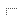

| UASR script tools/UASR_DOC.xtp |
|
| General | Signature | : | ||
| Author | : | Matthias Wolff |
Synopsis
UASR documentation generator
Arguments
$1 |
- UASR database name (optional) |
Contents
Usage
dlabpro UASR_DOC.xtp
Description
UASR_DOC.xtp scans all source files in the UASR script directory (see Fig. 1) and
creates the HTML manual. The UASR home directory is specified by the environment variable
UASR_HOME; the script directory is <UASR_HOME>/scripts. The program
is based on the document generator class DGen of dLabPro (see dLabPro documentation for details). A database specific manual can be generated
invoking UASR_DOC.xtp with the database identifiers as argument (e. g.: UASR_DOC.xtp midi).
The database must be located in the UASR database home directory (see Fig. 1) and its folder structure
must conform to the UASR database specification.
|  |
|
$UASR_HOME |
|
| 1) | Default (and strongly recommended) location is $UASR_HOME/../dlabpro |
| 2) | Location defined through environment variable UASR_HOME |
| 3) | Default (and strongly recommended) location is {$UASR_HOME}-data |
Fig. 1: UASR directory structure
The immediate subdirectories of $UASR_HOME/scripts subdivide the scripts by their languages.
Subdirectories in the language folders are considered as "packages". UASR_DOC.xtp creates
- one HTML page per script (named
$UASR_HOME/manual/automatic/<packagename>/<scriptname>.html), - one index page per package (
$UASR_HOME/manual/automatic/<packagename>/index.html), - one documentation home page (
$UASR_HOME/manual/home.html), - one table-of-contents page (
$UASR_HOME/manual/toc.html), - one keyword index page (
$UASR_HOME/manual/automatic/kwdindex.html), and - one alphabetical-index-of-functions page (
$UASR_HOME/manual/automatic/fncindex.html).
As of Nov. 2013, UASR_DOC.xtp documents scripts written in the following languages:
| Language | File extension(s) |
|---|---|
| dLabPro | .?tp |
| Perl | .pl |
Documentation Comments
Like JavaDoc, UASR_DOC.xtp will scan all source files for documentation comments. There are two
types:
Preamble Comments
General information about a script may be placed as a properly formatted comment at the very beginning of a
script. Documentation comments start with a double hash character (##). The very first line may start
with #! specifying dLabPro or Perl as interpreter. The second line usually says "Unified Approach to
Speech Synthesis and Recognition" and is ignored by UASR_DOC.xtp. The third line contains a short
description of the script. A leading hyphen (-) will be trimmed. The rest of the preamble comment
consists of key-value pairs in the format "## KEY: value". Key and value are serparated by a colon
(:). There may be white spaces before and after the colon. The value may consist of several words and
may span multiple lines. Each new line must start with a double comment mark (##). The preamble comment
ends before the first line which is not blank and does not start with "##"
Here is an example of a well-formatted preamble comment of a dLabPro script:
#!/usr/bin/env dlabpro
## Unified Approach to Speech Synthesis and Recognition
## - Initialize graphone joint n-multigram
##
## AUTHOR : Matthias Wolff
## PACKAGE: uasr/scripts/dlabpro/tools
##
## ARGUMENTS:
## $1: IN string Filename of setup script
##
## DESCRIPTION:
## GRPH_INIT compiles and analyzes the phonetic dictionary
## and generates the candidate graphone NM-gram. The set of
## candidates contains every possible grapheme to phoneme
## alignment found in the dictionary. Furthermore a symbol
## counter data instance is created containing reference
## counters for each grapheme and phoneme as well as counters
## for the occourance of segments and different segments
## ordered by their length.
The key-value pairs must follow up in a defined order. Some sections require specially formatted values. Ill formatted lines will be ignored. Details can be found in the table below.
| No. | Key | Description | Doc. Scanner Specification | |
|---|---|---|---|---|
| 1. | 1 line (optional) | "#!" |
Unix shell command to execute this script | ignore |
| 2. | 1 line (mandatory) | none | "" |
First line starting with "##"; ignore.
|
| 3. | mulitple lines (mandatory) | none | Short description of script |
Second line starting with "##" through next key. A hyphen ("-") at the beginning
of the first line of the short description will be trimmed. Blanks will be trimmed from
the beginning and the end of all lines of the short description.
|
| 4. | 1 line (mandatory) | "## AUTHOR" |
Author of script | First line starting with key name. Value starts behind first ":" after key name and ends before the next key name or the next blank line. Leading and trailing blanks to be removed from value. |
| 5. | 1 line (optional) | "## PACKAGE" |
UASR package name | First line starting with key name. Value starts behind first ":" after key name and ends before the next key name or the next blank line. Leading and trailing blanks to be removed from value. |
| 6. | multiple lines (mandatroy) | "## ARGUMENTS" |
Description of the script's command line arguments in the following form:
|
First line starting with key name. Value starts behind first ":" after key name and ends before the next key name or the next blank line. Leading and trailing blanks to be removed from value. Value consists or one or multiple lines formatted as defined in previous column. Description of argument starts at the 3rd white space separated field after ":" and ends at the of the line. |
| 7. | multiple lines (optional) | "## DESCRIPTION" |
Description of script. May contain HTML code. Blank lines in synopsis must still be preceded by
"##".
|
First line starting with key name. Value starts behind first ":" after key name and ends before the next key name or the next blank line. Leading and trailing blanks to be removed from value. |
There is another special comment: If the script contains the following line, the whole script will be ignored. No documentation will be generated at all.
#@uasrdoc: ignore
Function Documentation Comments
UASR_DOC.xtp supplies rudimentary JavaDoc-style documentation comments for functions. The
documentation comment immediately precedes the function definition. There are no blank lines allowd between the
comment and the definition. All documentation comment lines start with "##". There are no blank
lines allowed within the documentation comment. The comment consist of a description text (HTML is acceptable)
and a set of tags describing parameters, the return value and other properties of a function:
| Tag | Description |
|---|---|
@cgen:ignore |
Do not document this function.
This tag must precede all @param and @return
tags! @cgen:ignore must be the first token on a line,
any extra tokens on that line will be ignored. |
@cgen:index |
Adds this function to the alphabetical index of functions. This tag
must precede all @param and @return tags!
@cgen:ignore must be the first token on a line, any
extra tokens on that line will be ignored. |
@global <configuration-key> access@global global-instance-id access |
Adds an entry to the "Access to Configuration and Global Instances"
section. access is any combination of the letters C, W, and R
(without any separators in between them) for "create", "write", and
"read", respectively. @global must be the first token on
a line, any extra tokens on that line will be ignored. |
@param parameter-name parameter-type description |
Adds a parameter to the "Parameters" section. The description may be
continued on the next line. @param must be the first
token on a line. |
@see label [href] |
Adds an entry to the "See also" section. label is the link
label and href the link reference (relative to the current HTML
file). If href is omitted, label is considered the name
of a function documented on the same HTML page and a reference is
created accordingly. @see must be the first token on a
line, any extra tokens on that line will be ignored. |
@return description |
Adds a "Return value" section with the description text. This text
should describe the return type and permissible range of values. Use
@return nothing for functions which do not return a value.
@return must be the firs token on a line. |
Here is an example of a well-formatted function documentation comment:
## Configures an UASR session. The function creates a list of key/value pairs ## from the following sources (with descending priority): ## <ol> ## <li><code>-P<key>=<value></code> command line options,</li> ## <li>the custom configuration file <code>sFile</code> and </li> ## <li>the default configuration file <code>config/default.cfg</code>.</li> ## </ol> ## ## <h4>Remarks</h4> ## <ul> ## <li>Custom configuration files only need to modify present or add new ## key/value pairs. They do not need to repeat key/value pairs contained in ## the default configuration.</li> ## </ul> ## ## @cgen:ignore ## @param sFile string ## Path to UASR configuration file to be loaded ## @return <code>TRUE</code> if successful, <code>FALSE</code> otherwise function -CFG_init(sFile) ...
Customizing the HTML Documentation
UASR_DOC.xtp supports custom (i.e. manually written) HTML code in each of the documentation pages.
That means you may modify certain parts of the automatically generated and maintained HTML files.
UASR_DOC.xtp will leave HTML code between the two markers <!--{{ CUSTOM_DOC
--> and <!--}} CUSTOM_DOC --> untouched.
There are some restrictions:
- There is only one
<!--{{ CUSTOM_DOC --> ... <!--}} CUSTOM_DOC -->section per HTML file. Its location cannot be changed. - You must not place custom HTML code outside the markers.
- You must not remove or alternate the markers.
- There must not be any HTML code on a line containing a marker (white spaces are ok).
- No line in the custom HTML code must be longer than 255 characters. Overlong lines will be truncated!
Keyword Index
In both, documentation comments and custom HTML you can define index terms to add to the keyword index page by inserting the HTML code
<a name="index:<anchor-name>" title="<keyword>"></a>
where <anchor-name> is a globally unique identifier and <keyword>
is the index term itself.
Please note: Key word definitions must be formatted exactly as shown above. The order of the attributes cannot be altered and there must not be any extra white spaces (including line breaks).